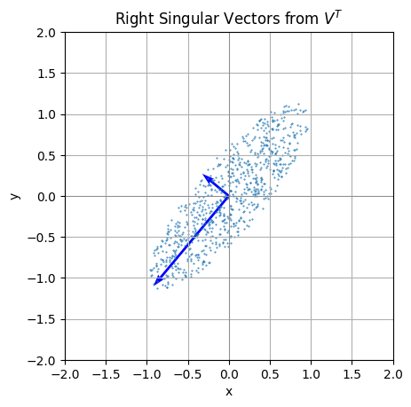

import numpy as np
import matplotlib.pyplot as plt
X,Y = [],[]
for i in range(2000):
x,y = np.random.normal(0,1,(2,1))
if x**2 + y**2 < 1:
X += [x]
Y += [y]
X = np.array(X).T
Y = np.array(Y).T
ax = plt.gca()
ax.scatter(X,Y,s=0.1)
ax.set_xlim(-2,2)
ax.set_ylim(-2,2)
ax.set_aspect(1)
M = np.random.normal(0,1,(2,2))
M = M @ M.T
M = M / np.linalg.det(M)
p = np.vstack([X,Y])
X2,Y2 = M@p
ax = plt.gca()
ax.scatter(X2,Y2,s=0.2)
ax.set_aspect(1)
# Perform SVD
U, S, VT = np.linalg.svd(M)
SVT = np.diag(S)@VT
# Extract right singular vectors (rows of V^T)
right_singular_vectors =SVT
# Set up the plot
fig, ax = plt.subplots()
ax.set_aspect('equal')
ax.axhline(0, color='gray', linewidth=0.5)
ax.axvline(0, color='gray', linewidth=0.5)
# Plot each right singular vector
for vec in right_singular_vectors:
ax.quiver(0, 0, vec[0], vec[1], angles='xy', scale_units='xy', scale=1, color='b')
ax.scatter(X2,Y2,s=0.2)
# Set axis limits for better visibility
plt.xlim(-2, 2)
plt.ylim(-2, 2)
plt.xlabel("x")
plt.ylabel("y")
plt.title("Right Singular Vectors from $V^T$")
plt.grid()
plt.show()

U@VT
array([[-1.94959050e-01, -1.95131440e-01, -1.22645270e-01, ...,
3.21735150e-01, 3.20604038e-01, -1.92577766e-01],
[-5.33864140e-01, -2.53540366e-01, 2.68298219e-01, ...,
-1.24510574e-02, -1.59878266e-02, 5.77034813e-03],
[-3.27631945e-01, 3.05060936e-01, -6.46807106e-01, ...,
-9.71938299e-02, -1.29342506e-01, 8.18789132e-02],
...,
[-4.02106413e-04, 1.65226611e-02, 7.95239639e-02, ...,
-5.60412187e-02, 1.99123009e-01, -1.18713576e-01],
[-4.21769809e-04, -2.23327589e-03, -1.31152037e-02, ...,
-6.05086633e-02, 3.62212273e-02, -1.49494274e-02],
[-4.03776557e-04, 2.14033274e-03, 3.57466570e-02, ...,
-1.86738996e-03, 5.84540130e-02, -1.82029172e-02]])
VT
array([[-4.07722446e-02, -4.07722446e-02, -4.07722446e-02, ...,
-4.08041101e-02, -4.08041101e-02, -4.08041101e-02],
[-1.09328053e-02, -1.09328053e-02, -1.09328053e-02, ...,
-1.07629931e-02, -1.07629931e-02, -1.07629931e-02],
[ 1.75277125e-02, 1.75277125e-02, 1.75277125e-02, ...,
1.74494994e-02, 1.74494994e-02, 1.74494994e-02],
...,
[ 0.00000000e+00, 2.24372252e-01, -4.79546548e-01, ...,
1.34515275e-01, 1.48274823e-01, -8.19898487e-02],
[ 0.00000000e+00, 2.62640521e-01, 6.55028176e-01, ...,
9.95951876e-02, 1.19369799e-01, -6.23092949e-02],
[-9.65747193e-01, 6.97204805e-02, 6.97204805e-02, ...,
4.23629168e-04, 4.23629168e-04, 4.23629168e-04]])
import numpy as np
import matplotlib.pyplot as plt
# Define the original matrix
A = np.random.random((2,2))
A = A@A.T
# Perform SVD
U, S, VT = np.linalg.svd(A)
right_singular_vectors = U # V^T
# Generate points for a unit circle
theta = np.linspace(0, 2 * np.pi, 100)
circle_points = np.array([np.cos(theta), np.sin(theta)]) # Shape (2, 100)
# Transform circle points by matrix A
transformed_circle_points = A @ circle_points
# Set up the plot
fig, ax = plt.subplots()
ax.set_aspect('equal')
ax.axhline(0, color='gray', linewidth=0.5)
ax.axvline(0, color='gray', linewidth=0.5)
# Plot the original unit circle
ax.plot(circle_points[0], circle_points[1], 'g--', label="Unit Circle (Before Transformation)")
# Plot the transformed unit circle
ax.plot(transformed_circle_points[0], transformed_circle_points[1], 'r--', label="Transformed Circle")
# Plot each right singular vector as an arrow
for vec in right_singular_vectors:
ax.quiver(0, 0, vec[0], vec[1], angles='xy', scale_units='xy', scale=1, color='b', label="Right Singular Vector")
# Set axis limits for better visibility
plt.xlim(-4, 4)
plt.ylim(-4, 4)
plt.xlabel("x")
plt.ylabel("y")
plt.title("Right Singular Vectors and Circle Transformation")
plt.legend()
plt.grid()
plt.show()
U
array([[-0.8108273 , -0.58528547],
[-0.58528547, 0.8108273 ]])
VT
array([[-0.8108273 , -0.58528547],
[-0.58528547, 0.8108273 ]])
import numpy as np
import matplotlib.pyplot as plt
# Define a non-symmetric matrix
A = np.array([[2, 1], [1,2]])
# Perform SVD
U, S, VT = np.linalg.svd(A)
right_singular_vectors = VT # V^T
# Generate points for a unit circle
theta = np.linspace(0, 2 * np.pi, 100)
circle_points = np.array([np.cos(theta), np.sin(theta)]) # Shape (2, 100)
# Transform circle points by matrix A
transformed_circle_points = A @ circle_points
# Set up the plot
fig, ax = plt.subplots()
ax.set_aspect('equal')
ax.axhline(0, color='gray', linewidth=0.5)
ax.axvline(0, color='gray', linewidth=0.5)
# Plot the original unit circle
ax.plot(circle_points[0], circle_points[1], 'g--', label="Unit Circle (Before Transformation)")
# Plot the transformed unit circle
ax.plot(transformed_circle_points[0], transformed_circle_points[1], 'r--', label="Transformed Circle")
# Plot each right singular vector as an arrow
for vec in right_singular_vectors:
ax.quiver(0, 0, vec[0], vec[1], scale=1, scale_units="xy", color='b', label="Right Singular Vector")
# Set axis limits for better visibility
plt.xlim(-4, 4)
plt.ylim(-4, 4)
plt.xlabel("x")
plt.ylabel("y")
plt.title("Right Singular Vectors and Circle Transformation for Non-Symmetric A")
plt.legend()
plt.grid()
plt.show()

import cv2
from PIL import Image
import numpy as np
# Open the image
img = Image.open("gauss.jpg")
img = img.resize((1024,1024))
# Convert the image to grayscale (optional, if you only need intensity values)
img_gray = img.convert("L")
# Convert the image to a NumPy array
img_matrix = np.array(img_gray)
# Display the matrix
plt.imshow(img_matrix, cmap="gray")
plt.axis("off") # Hide axes for a cleaner look
plt.show()
U,S,VT = np.linalg.svd(img_matrix)
S
array([1.90491458e+05, 3.32751437e+04, 2.65842865e+04, ...,
1.08662351e-11, 1.01234949e-11, 5.74057441e-12])
plt.plot(S)
[<matplotlib.lines.Line2D at 0x780a31faa750>]
S2 = S.copy()
S2[100:]= 0
new_image = U@(np.diag(S2)@VT)
plt.imshow(new_image, cmap="gray")
plt.axis("off") # Hide axes for a cleaner look
plt.show()
27. S2 = S.copy()
S2[200:]= 0 reconstruction_error = np.linalg.norm(new_image - img_matrix) reconstruction_error
errors = []
cutoffs = range(10,1000,5)
for i in cutoffs:
S2 = S.copy()
S2[i:]= 0
new_image = U @ np.diag(S2) @ VT
reconstruction_error = np.linalg.norm(new_image - img_matrix)
errors += [reconstruction_error]
plt.plot(cutoffs, errors);